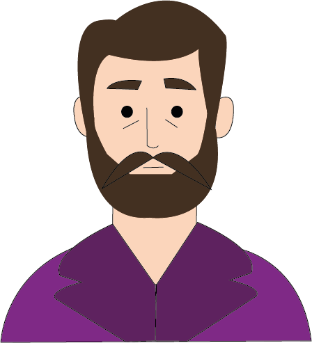

Antoni Gaudì


Nascita:
25 Giugno 1852, Reus, Spagna
Morte:
10 Giugno 1926, Barcellona, Spagna
Corrente:
Art nouveau, che in Spagna prende il nome di Modernismo



Opere più famose: Sagrada Familia 1882, Parco Guell 1900, Casa Batlò 1877
Curiosità: Il 7 giugno 1926 venne investito da un tram mentre si stava recando alla Sagrada Familia. Dopo l’urto perse i sensi e nessuno lo riconobbe. Venne trasportato all’Ospedale della Santa Croce dove, in seguito ad essere stato riconosciuto dal prete della Sagrada Familia, morì tre giorni dopo.
Citazione: “L’originalità consiste nel tornare alle origini”